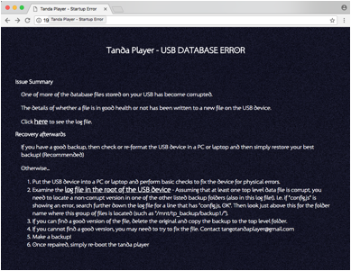
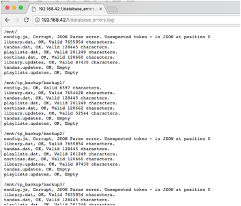

Unfortunately USB devices do not last forever and, owing to how the USB devices are used by the Tanda Player, if the user switches off the system without telling the system to shutdown using the power off icon the system might end up with a USB device it cannot use.
If the device is simply in a state of shock having been unplugged, then the USB can be fixed by putting it into a PC or laptop and running the diagnostic checking tools. Once done, try re-starting the Tanda Player.
However, it is possible for the USB device itself to get areas of the disk it can no longer write to or where the contents of a file become corrupted and no longer readable.
For this reason the user is strongly encouraged to keep exact copies of their USB devices so that if one becomes invalid the user can simply switch to the other one and start-up normally.
To help identify when things go bad and in addition possibly identify how to fix the problems the system runs a file check when it starts up. If any errors are detected a further analysis is performed to check the state of the backup folders also held on the USB device.
The report is written as a simple log file to the USB device.
To notify the user that there is an issue an alternative web site is started up and this simply leads the user to diagnose the fault.

Clicking on the links you can also get to see the log file on the status of the USB database files.

In the above the config.js file is now invalid, but there is a valid copy in the /mnt/tp_backup/backup1 folder. The fix in this case is simply to copy the valid one to the root of the USB device.